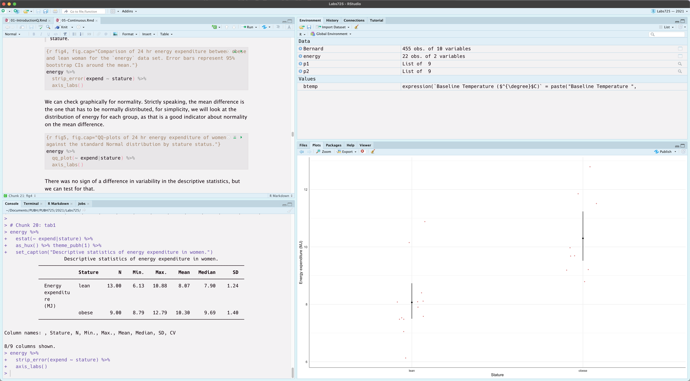
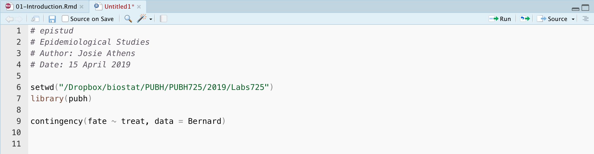
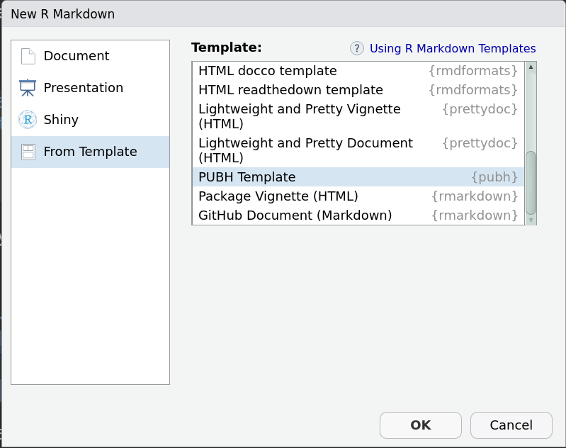
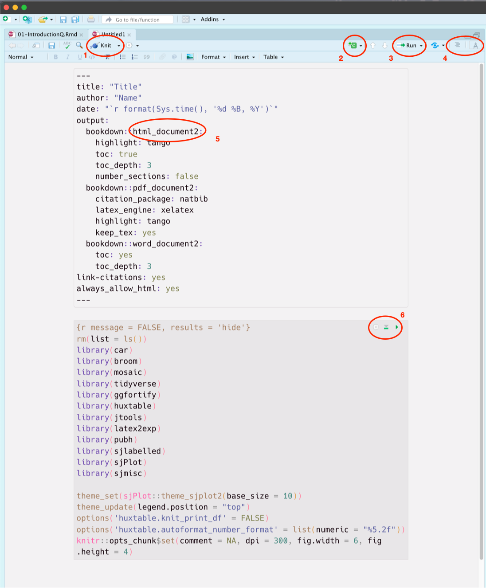

rm(list = ls())
library(tidyverse)
library(rstatix)
library(easystats)
library(ggfortify)
library(ggpubr)
library(jtools)
library(pubh)
library(sjlabelled)
library(sjPlot)
library(sjmisc)
import::from(latex2exp, TeX)
theme_set(sjPlot::theme_sjplot2(base_size = 10))
theme_update(legend.position = "top")
options('huxtable.knit_print_df' = FALSE)
options('huxtable.autoformat_number_format' = list(numeric = "%5.2f"))1 Data Manipulation
1.1 Overview
The first step in data analysis that involves R will be acquiring your data in an appropriate format, either by entering it directly into R, importing it from a spreadsheet or other format, or by opening a pre-existing R data file.
In this laboratory, we will look at performing simple data handling in R. The most important part of this lab is to get you familiar with the software.
Once you have completed this lab, you should feel comfortable:
- Creating variables in
R. - Understanding the difference between continuous variables and categorical ones (factors).
- Transforming data (e.g., converting from pounds to kilograms, calculating BMIs from weights and heights, log transformations, etc.).
- Extracting subsets of your data.
- Assigning labels to variables and categories within variables.
- Saving your data.
- Using
R’s help system. - Importing data in
Rfrom an Excel spreadsheet. - Creating script files.
1.2 Summary of New Commands
| Command | Library | Function |
|---|---|---|
| %$% | magrittr | Exposition pipe operator |
| %>% | magrittr | Forward pipe operator |
| %in% | base | Value matching |
| as_tibble | tibble | Coerces objects into tibbles |
| c | base | Concatenates values |
| copy_labels | sjlabelled | Copies labels from a data frame |
| count | dplyr | Counts observations by group |
| data | base | Loads data from R packages |
| factor | base | Defines factors |
| filter | dplyr | Filters data frames, given conditions |
| freq_table | rstatix | Frequency tables for categorical variables |
| frq | sjmisc | Frequency tables for categorical variables |
| glimpse | tibble | Displays information about a dataset |
| head | base | First rows of a data frame |
| help (?) | base | Help function |
| install.packages | utils | Installs packages in the system |
| is.factor | base | Evaluates if a variable is a factor or not |
| library | base | Loads (attaches) functions from a package |
| length | base | Number of observations in a variable |
| levels | base | Levels of categorical variables |
| mutate | dplyr | Transforms/generates variables |
| mean | base | Calculates the arithmetic mean |
| max | base | Calculates maximum value |
| names | base | Column names of variables in a data frame |
| nrow | base | Number of rows (observations) in data frames |
| read_csv | readr | Loads files with csv format/extension |
| read_rds | readr | Loads RDS files |
| relevel | base | Changes the reference category |
| rep | base | Replicates numbers or characters |
| rm | base | Deletes (removes) objects from the workspace |
| round | base | Rounds variables |
| RSiteSearch | utils | Searches R functions in the web |
| select | dplyr | Selects variables from a data frame or tibble |
| setwd | base | Sets the working directory (path) |
| tibble | tibble | Constructs tibbles |
| var_labels | sjlabelled | Assigns labels to variables |
| View | utils | Displays data frames |
| which | base | Finds the positions where the stated conditionals are true |
| which.max | base | Finds the position of the maximum value |
| with | base | Evaluates commands in a defined data frame or tibble |
| write_csv | readr | Exports files with csv format/extension |
| write_rds | readr | Writes RDS files |
1.3 RStudio
A typical session on RStudio would look something like Figure 3.1.

RStudio displaying a typical .Rmd Markdown script file on the top left corner.RStudio can have up to four panels open (displaying information):
- Source panel (top left). This panel shows the script files.
- Console panel (bottom left). This panel is where you interact with the program to perform an analysis. It shows the path of the current working directory at the top.
- Workspace panel (top right). You can select what to show in here. In Figure 3.1, it shows information about the workspace, like currently loaded objects (Environment) and the History of our commands.
- Display panel (bottom right). You can select what to show in here. In Figure 3.1, it shows Files, the Help files, generated Plots, Packages available on your
Rinstallation and the Viewer.
1.4 Scripts
Files that document our analysis are known as scripts, and they open on the Source panel. The standard script file has a .R extension and can be opened with any text editor.

.R script document.Figure 3.2 displays an example of a script file. These kind of files are intended to be read by R, so any text that is not part of a command, has to be commented. R will interpret anything written after a # (on the same line) as a comment.
Let’s clarify the first set of lines from the script file, as shown in Figure 3.2.
- The first line is a comment and gives the name of the file, so, it is not needed, but it is good to have.
- The second line is a comment about the content of the script. It can be a short or long description. The important thing to remember is that once that you start a new line, for example for writing a different paragraph, you would need to include the
#symbol at the beginning of each new line. - The third line is a comment about the author.
- The fourth line is a comment about the date.
- The sixth line sets the working directory. As explained in the preface, this can be done with the menus and it’s not needed when working in
Rprojects. - Line 7 loads the
pubhpackage. - Line 9 estimates measures of association of the exposure
treaton the outcomefatefrom theBernarddata set. ## Notebooks
The disadvantage of .R scripts is that you cannot produce a single document with both the analysis and the results of such analysis. Notebooks, permit us to record text, commands and results (including plots). We will be using Notebooks to document our analysis on both PUBH 725 and PUBH 726.
We will start by creating a mock notebook, using the template that comes with the pubh package (Athens 2020). Open RStudio and select File > New File > R Markdown....
Caution
For this paper, I will use the term of Notebooks for R Markdown (.Rmd) documents. Do NOT select File > New File > R Notebook to create the Notebook.
A window will pop-up like the one shown in Figure 3.3, select: From Template > PUBH Template.

R Markdown file (Notebook).Click OK or type the Return key. Have a look at the template; we will edit the script later. For the moment, Let’s run the template as it is. To execute the Notebook, you only need to click on the Knit button which can be found in the Source panel. When you click knit (see 1 in Figure 3.4) for the first time, it will ask for a name to save your file. Give a name like Lab1. The result will appear on the Display panel, and two files will be created: Lab1.Rmd is the script, and Lab1.html is the output that you can open with any web browser.
Tip
Word can also open html files.

R code. 3. The Run button to pass chunks to the console. 4 The Outline and Markup buttons. 5. The desired output of the document. 6. Cog button to access chunk options and buttons for running the chunk.Let’s create the Notebook for the first laboratory. Change the title to Data management and edit the author field.
Codes are inserted in sections called chunks or blocks. Go to the end of the script and click on Insert > R (see 2 in Figure 3.4). Your cursor will be, by default, where you can insert your commands. The easiest thing to do is just to copy from the lab book and paste the code in the chunk.
In Figure 3.4, the option message = FALSE was added to the first chunk, to hide messages from the output. You can change the options from a chunk by clicking on the Cog button (see 6 in Figure 3.4). Compile the RMardown script by clicking on the Knit button (see 1 in Figure 3.4).
Tip
For a quick reference on Markdown, go to Help > Markdown Quick Reference.
When you Knit the document, it compiles the full document and displays the results on the Display panel. Sometimes, we want to check a particular command. For doing that, you can transfer your command from the script file by clicking on the small green arrow at the right of the code (see 3 and 6 in Figure 3.4). Depending on your preferences, the results will show on the Console panel or directly in your script file.
Warning
The console has no history of what you knit, that means that if you are testing a particular code, on a dataset that has not been loaded yet on the Console panel, you will have an error message. To keep it safe, if you want to work in an interactive way with the Console, run each chunk as you progress and knit only when you want to look at the whole document.
1.4.1 Accessing help
When you do not know about the specific options or syntax of a particular command, you can access the help files. For example, Let’s say you want to learn more about the mean function. One way is to use the help command is:
help(mean)::: callout-::: {.notes} The general syntax for a command in R is: command(object, options); where command is a function available on the current loaded R packages or created for the current session. :::
As an alternative, we can use the question mark, without any parenthesis as in:
?sdIt’s important that you get familiar with help files. At the end of each help file, you can see some examples. You can select a particular example and then type Ctrl + Return (Windows) or Command + Return (Macintosh) to transfer the selection to the console.
Warning
- The help will only look for documentation on functions that are part of the attached packages.
- Use the
helpcommand only in the Console panel. DO NOT includehelpcommands as part of your script files.
When we do not know the name of the function, or it may be part of a package that is installed in the computer, but not loaded yet, you can search by using double question marks. For example, Let’s say that you would like to know how to perform diagnostic tests (e.g., sensitivity, specificity, etc.), in that case, you would type (please note the use of quotes):
?? "diagnostic tests"When we use ?? the system searches for functions associated with current installed packages. When we need to make a further search on the web, we can use RSiteSearch in the Console panel. For example:
RSiteSearch("meta-analysis")Exercise: Find out what the
namescommand does.Answer: Gives the names from an
Robject. We use this to know the variables contained in a given dataset (data.frameortibbleinR).
1.4.2 Browsing help
Other times, you just want to browse the functions of a particular package of interest, to find new commands. For example, go to the Display panel and select the Packages tab. Look for the package pubh and click on it. A help file will open with the description of all functions and data that are part of that package. You can click on any of the listed functions to gather more information. Some packages have also Vignettes which are more helpful as they guide you to the use of the functions contained in the package.
In the help file of pubh click on User guides, package vignettes and other documentation. Next, select the first one: Introduction to the pubh package. You do not have to read through that vignette today, but now you know how to access vignettes.
1.5 Packages
When you open R, it loads a standard number of packages, each one of them includes a particular set of functions and data. We can extend the number of available functions by loading more packages into the system.
When you start with the template provided by the pubh package, the first chunk loads recommended packages for PUBH 725 and PUBH 726 into the session. When loading a package required packages are also automatically attached.
In particular, when loading pubh the following packages are loaded too:
emmeansggformulamagrittrhuxtablegtsummary
The tidyverse loads a collection of packages:
dplyrforcatsggplot2purrrreadrstringrtibbletidyr
When we load package easystats the following packages are loaded:
insightbayestestRparametersmodelbasedseedatawizardeffectsizecorrelationreport
Sometimes, we would like to load more packages either because of a particular function or because we would like to access data from that library. We use the function library to load a package; for example, to load the ISwR package (ISwR stands for Introductory Statistics with R), we type:
library(ISwR)A list of most of the available R packages can be found at the CRAN web page, under Packages. Libraries associated with Bioinformatics can be found at the Bioconductor web page. Finally, packages organised by topic, can be found here.
To install a new package, you can go to the Display panel, and click on Install under the Packages tab.
Another option is to type the command in the Console panel. For example, to install the epibasix package we type:
install.packages("epibasix")1.6 Objects in R
1.6.1 Short-cuts
The following are important short-cuts that we can use in RStudio:
| Function | Output | MacOS Short-cut | Windows Short-cut |
|---|---|---|---|
| Assignment | <- |
Option - |
Alt - |
| Pipe | %>% |
Shift Command M |
Shift Ctl M |
| Action | MacOS Short-cut | Windows Short-cut |
|---|---|---|
| Insert Chunk | Option Command I |
Alt Ctl I |
| Run line/selection | Command Return |
Ctl Return |
Formats text selection as code |
Command D |
Ctl D |
1.6.2 Assignments
An excellent introduction to R and its objects, can be found in the first chapter of (Dalgaard 2008).
Note
From now on, copy all the R commands in your script file (your RMarkdown Notebook). Be free to add text to comment or to change options or variables.
A variable that holds a number or character is known as a scalar. Assignments are done with <- with no space between the two symbols. Assignments can also be done using the equal = symbol. For example:
x = 5
x + 3[1] 8When a variable, holds 2 or more numbers or characters, is called a vector. For example, a vector of 3 weights (in pounds) is generated using the command c (concatenate):
weight = c(151.45, 194, 121.25)The advantage of vectors is that operations become faster than performing single operations. For example, let’s say that we want to convert the weight in pounds to kg, and we do not want to have another variable, so just replace the old one. One kg equals 2.2046 pounds:
weight = weight/2.2046
weight[1] 68.69727 87.99782 54.99864There is no way we could measure human weight with that accuracy using standard devices, so let’s round the values. First, look at the help file of round. The default is digits = 0 (i.e., no decimals). We are going to keep one decimal. As round has no other option, we can directly type the value of x (our object) and the number of digits. In other occasions, for clarity, we will type things like digits = 1.
round(weight, 1)[1] 68.7 88.0 55.01.6.3 Pipe-work flow
R is a computer language, thus, functions are performed from the most nested ones, to the less ones. For example, if we want to estimate the mean value of the vector of weights that we created, and report only one digit, we write:
round(mean(weight, na.rm = TRUE), 1)[1] 70.6When we have several parentheses, it’s easy to get lost on the code. One option is to use a pipe-work flow. Package magrittr uses the command %>% to pass information in what is known as pipe-work flow. In this case, commands are simply read from left to right and top to bottom:
weight |>
mean(na.rm = TRUE) |>
round(1)[1] 70.6To remove (clear) objects from the workspace, we use rm:
rm(x, weight)1.7 Generating data
For small datasets, the easiest thing to do is to generate the data directly in R. We will start by entering some data of our own. This particular dataset describes the levels of uric acid in the bloodstream of twenty subjects aged from 21 to 25. There were five individuals with each combination of Down’s syndrome being present/absent and sex being male/female.
The variable uric contains the values for the uric acid, the variable downs contains numerical values for Down’s syndrome (0 = “No”, 1 = “Yes”) and the variable sex contains numerical values representing sex (0 = “Male”, 1 = “Female”).
uric_down = tibble(
uric = c(5.84, 6.3, 6.95, 5.92, 7.94, 5.5, 6.08, 5.12, 7.58, 6.78,
4.9, 6.95, 6.73, 5.32, 4.81, 4.94, 7.2, 5.22, 4.6, 3.88),
downs = c(rep(0, 5), rep(1, 5), rep(0, 5), rep(1, 5)),
sex = c(rep(0, 10), rep(1, 10))
)We used the rep (replicate) command for both downs and sex. In the case of downs, it alternates 5 zeros (meaning “No”) and 5 ones (meaning “Yes”). For sex, we are entering the males first (10 of them) and the females later (10 of them).
The most common way to work with data sets in R are data.frames. A data frame is a rectangular object in which all components (variables) have the same length. A data frame can have variables of different nature (character, logical, double, etc), but each one of them of a single nature and all of them of the same length. A modern version of data frames are tibbles.
We can look at all columns but only the first rows of the data:
uric_down |> head() # A tibble: 6 × 3
uric downs sex
<dbl> <dbl> <dbl>
1 5.84 0 0
2 6.3 0 0
3 6.95 0 0
4 5.92 0 0
5 7.94 0 0
6 5.5 1 01.7.1 Categorical variables: Factors
When we defined the data set uric_down, we used only numbers. Both downs and sex are categorical variables. A categorical variable in R is known as factor. Each factor contains two or more levels or categories.
To convert the variable sex from the data set uric_down to a factor we use the command factor indicating the names of the levels for each category in the same order as the corresponding sequence of numbers.
In this kind of operation, we need to give information of the variable, the name of the dataset and the actual function with options. One way to accomplish this, would be (please do NOT run):
uric_down$sex = factor(uric_down$sex, labels = c("Male", "Female"))If you understood the instructions, you did NOT run the previous code! Alas, we need to explain.
The name of the variable is sex and the name of the dataset is uric_down. We use the $ symbol to give an address, like saying:
Variable
sexlives aturic_down.
We would need to do something similar to convert downs to a factor.
We will use a different approach, one more elegant, modern and posh (just saying!). We will use a pipe-workflow to transform variables.
Package magrittr introduced the concept of pipes in R; it’s like passing information between objects and functions. The symbol to pass or pipe the information is %>%.
Caution
In some cases, when a function (usually an old function) does not contain data as part of its arguments, we use %$% instead.
For the conversion to factors, we use the function mutate from the dplyr package.
Let’s transform downs and sex from numerical (double) to categorical (factor) variables:
uric_down2 = uric_down |>
mutate(
downs = factor(downs, labels = c("No", "Yes")),
sex = factor(sex, labels = c("Male", "Female"))
)
uric_down2 |> head()# A tibble: 6 × 3
uric downs sex
<dbl> <fct> <fct>
1 5.84 No Male
2 6.3 No Male
3 6.95 No Male
4 5.92 No Male
5 7.94 No Male
6 5.5 Yes Male 1.7.2 Labels
We would also like to display more information than the current variable name, in tables and figures. To accomplish this, we associate labels with variables. We will use var_labels from the sjlabelled package. Notice, that the way we assign labels is similar to the one we used for transformations:
uric_down2 = uric_down2 %>%
var_labels(
uric = "Uric acid (mg/dl)",
downs = "Down's syndrome",
sex = "Sex"
)For small datasets (like our current one) it is easier to make the transformation and the labelling as part of the same pipe-workflow.
We had not modified the original data set uric_down, instead, we created a new one uric_down2, so we could go one step at a time. You can remove uric_down2 with:
rm(uric_down2)To do both, transformation and labelling in the same pipe-workflow, we type:
uric_down = uric_down %>%
mutate(
downs = factor(downs, labels = c("No", "Yes")),
sex = factor(sex, labels = c("Male", "Female"))
) %>%
var_labels(
uric = "Uric acid (mg/dl)",
downs = "Down's syndrome",
sex = "Sex"
)1.8 Saving R data frames
The advantage of saving data frames as R data (.rds) is that R will have access to factors, levels and labels. I will save the data on the subdirectory data.
write_rds(uric_down, "data/uric_down.rds")If you are following instructions, you have everything recorded in your script in case you did something wrong. To show how to import, we will remove all objects associated with the data frame first:
rm(uric_down)To load the data, we use read_rds and assign the file to a new object (in this case, a tibble). For simplicity, I use the same name of the file as the name of the new data frame, but you can change that.
uric_down = read_rds("data/uric_down.rds")
uric_down |> head()# A tibble: 6 × 3
uric downs sex
<dbl> <fct> <fct>
1 5.84 No Male
2 6.3 No Male
3 6.95 No Male
4 5.92 No Male
5 7.94 No Male
6 5.5 Yes Male 1.9 Variables in data frames
The uric_down data frame has three variables. R can have more than one data frame loaded on the same session, that feature has the disadvantage that we need to tell R where to find individual variables.
For example, uric_down has a vector (variable) named sex. We could have another data frame which also has the variable sex, how do we know which one we are analysing? We have to give information of both the data frame and the vector. One way is by using the $ symbol. The syntax is:
data$vector
For example:
uric_down$sex [1] Male Male Male Male Male Male Male Male Male Male
[11] Female Female Female Female Female Female Female Female Female Female
attr(,"label")
[1] Sex
Levels: Male FemaleAnother option is to select the variables (columns) we are interested in:
uric_down |>
select(sex, downs) |>
frq()Sex (sex) <categorical>
# total N=20 valid N=20 mean=1.50 sd=0.51
Value | N | Raw % | Valid % | Cum. %
--------------------------------------
Male | 10 | 50 | 50 | 50
Female | 10 | 50 | 50 | 100
<NA> | 0 | 0 | <NA> | <NA>
Down's syndrome (downs) <categorical>
# total N=20 valid N=20 mean=1.50 sd=0.51
Value | N | Raw % | Valid % | Cum. %
-------------------------------------
No | 10 | 50 | 50 | 50
Yes | 10 | 50 | 50 | 100
<NA> | 0 | 0 | <NA> | <NA>An alternative to $ is the function with. The syntax is: with(data, function(x)). For example, if we want to know if sex is a factor we can type:
with(uric_down, is.factor(sex))[1] TRUEOr using pipes:
uric_down %$% is.factor(sex)[1] TRUEThe same command using the $ symbol:
is.factor(uric_down$sex)[1] TRUE
Important
The attach command allows to access variables within data frames directly, however, it’s not convenient when you work with more than one data set on the same session.
In the current example, the last command was simpler but in many cases is better to use %>%.
1.10 Export and import objects
To export a data frame (or other objects) to Excel, we will write .csv files (comma-separated values). In the following code, the file will be saved in the subdirectory data:
write_csv(uric_down, "data/uric_down.csv")For importing data from Excel, remember to:
- Don’t use complicated names for the variables, in particular:
- Don’t start a variable name with a number.
- Don’t leave spaces as part of the name, e.g. don’t use
blood pressure. Some alternatives are:blood_pressurebpblood.pressureBloodPressure
- Don’t use a long, complicated name for the name of your file; it is better to avoid spaces.
- Don’t leave cells blank (without any information). For missing data, we will type
NA. - It is easier to record only numbers and to add labels on
Rlater, to avoid mistakes on the names (it’s not the samefemale,Female, orfemalewith a blank space before thef). - Export your data as comma-separated values (.csv).
Let’s load our data frame:
uric_down = read_csv("data/uric_down.csv", col_types = "dff")
uric_down %>% glimpse()Rows: 20
Columns: 3
$ uric <dbl> 5.84, 6.30, 6.95, 5.92, 7.94, 5.50, 6.08, 5.12, 7.58, 6.78, 4.90…
$ downs <fct> No, No, No, No, No, Yes, Yes, Yes, Yes, Yes, No, No, No, No, No,…
$ sex <fct> Male, Male, Male, Male, Male, Male, Male, Male, Male, Male, Fema…
Note
- It’s also possible to load .csv files using
read.csv. - When we use
read.csvthe data is loaded as a data frame, whereas when we useread_csvthe data is loaded as a tibble. - For data frames (using
read.csv), variables with characters are transformed directly as factor, hence the command:uric_down = read.csv("data/uric_down.csv")would be enough. - For tibbles (using
read_csv), variables with characters remain characters unless we declare them as factor. The argument:col_types = "dff"indicates that the first variable is a double and the next two are factors.
Another way to import datasets is by going to the Environment tab, under the Workspace panel. There you can go to Import Dataset > From CSV....
Tip
The following strategy is recommended:
- Load all your data in an Excel spreadsheet, remembering all points mentioned earlier.
- Save your data in Excel format and also export it as a
.csvfile. - Import your data in
R. - Define factors and labels.
- Once you are happy with your data, save it as a
.rdsfile withwrite_rds. - Perform your analysis with your data and document everything on a script file.
1.11 Data manipulation
In most cases you start by inspecting your data, cleaning, defining factors and making transformations. As mentioned in the section before, your data will come from a spreadsheet. In this paper, we will use data contained in R packages most of the time.
First read the help file for the dataset wcgs by typing: ?epitools::wcgs in the Console panel.
We use the function data to load data from R packages.
data(wcgs, package = "epitools")
names(wcgs) [1] "id" "age0" "height0" "weight0" "sbp0" "dbp0" "chol0"
[8] "behpat0" "ncigs0" "dibpat0" "chd69" "typechd" "time169" "arcus0" The first thing I would like to do is to change the name of the variables:
wcgs = as_tibble(wcgs)
names(wcgs) = c(
"id", "age", "height", "weight", "sbp", "dbp",
"chol", "beh_pat", "ncigs", "dib_pat", "chd",
"type_chd", "time", "arcus"
)
wcgs %>% names() [1] "id" "age" "height" "weight" "sbp" "dbp"
[7] "chol" "beh_pat" "ncigs" "dib_pat" "chd" "type_chd"
[13] "time" "arcus" 1.11.1 Defining factors
Now, we define categorical variables as factors. By default, the value zero is our reference.
wcgs = wcgs |>
mutate(
chd = factor(chd, labels = c("No CHD", "CHD")),
arcus = factor(arcus, labels = c("Absent", "Present")),
beh_pat = factor(beh_pat, labels = c("A1", "A2", "B3", "B4")),
dib_pat = factor(dib_pat, labels = c("B", "A")),
type_chd = factor(type_chd, labels = c("No CHD", "MI or SD", "Angina", "Silent MI"))
)1.11.2 Transforming to a binary variable
One of our variables is a count and stores the number of smoked cigarettes/day. We can define a new variable Smoker in which, everyone who smokes one or more cigarette/day will be a smoker. One of the easiest ways to create binary variables is to use a conditional statement. For example, the result of wcgs$ncigs > 0 is a vector with TRUE and FALSE results.
wcgs = wcgs |>
mutate(
smoker = factor(ncigs > 0, labels=c("Non-Smoker", "Smoker"))
)1.11.3 Simple numeric transformations
We also, prefer units in the metric system. We will convert from inches to centimetres and from pounds to kg.
wcgs = wcgs |>
mutate(
height = height * 2.54,
weight = weight * 0.4536
)1.11.4 Changing the reference for factors
First, check the reference level for the variable dib_pat:
levels(wcgs$dib_pat)[1] "B" "A"It would make more sense to have A as our reference category.
wcgs = wcgs |>
mutate(dib_pat = relevel(dib_pat, ref = "A"))1.11.5 Labels
It is also helpful to add labels to variables.
wcgs = wcgs |>
var_labels(
age = "Age (years)",
height = "Height (cm)",
weight = "Weight (kg)",
sbp = "SBP (mm Hg)",
dbp = "DBP (mm Hg)",
chol = "Cholesterol (mg/dl)",
beh_pat = "Behaviour pattern",
ncigs = "Cigarettes (n/day)",
dib_pat = "Dichotomous behaviour",
chd = "Coronary Heart Disease",
type_chd = "Type of CHD",
time = "Follow up time (days)",
arcus = "Corneal arcus",
smoker = "Smoking status"
)Exercise: Take a glimpse of your new data frame and save it as
wcgs.rdsfile for further use.
wcgs |> glimpse()Rows: 3,154
Columns: 15
$ id <int> 2001, 2002, 2003, 2004, 2005, 2006, 2007, 2008, 2009, 2010, 2…
$ age <int> 49, 42, 42, 41, 59, 44, 44, 40, 43, 42, 53, 41, 50, 43, 44, 5…
$ height <dbl> 185.42, 177.80, 175.26, 172.72, 177.80, 182.88, 182.88, 180.3…
$ weight <dbl> 68.0400, 72.5760, 72.5760, 68.9472, 68.0400, 92.5344, 74.3904…
$ sbp <int> 110, 154, 110, 124, 144, 150, 130, 138, 146, 132, 146, 138, 1…
$ dbp <int> 76, 84, 78, 78, 86, 90, 84, 60, 76, 90, 94, 96, 90, 80, 80, 8…
$ chol <int> 225, 177, 181, 132, 255, 182, 155, 140, 149, 325, 223, 271, 2…
$ beh_pat <fct> A2, A2, B3, B4, B3, B4, B4, A2, B3, A2, A2, A2, A1, B3, B3, B…
$ ncigs <int> 25, 20, 0, 20, 20, 0, 0, 0, 25, 0, 25, 20, 50, 30, 0, 3, 9, 0…
$ dib_pat <fct> A, A, B, B, B, B, B, A, B, A, A, A, A, B, B, B, B, A, B, A, A…
$ chd <fct> No CHD, No CHD, No CHD, No CHD, CHD, No CHD, No CHD, No CHD, …
$ type_chd <fct> No CHD, No CHD, No CHD, No CHD, MI or SD, No CHD, No CHD, No …
$ time <int> 1664, 3071, 3071, 3064, 1885, 3102, 3074, 3071, 3064, 1032, 3…
$ arcus <fct> Absent, Present, Absent, Absent, Present, Absent, Absent, Abs…
$ smoker <fct> Smoker, Smoker, Non-Smoker, Smoker, Smoker, Non-Smoker, Non-S…write_rds(wcgs, "data/wcgs.rds")1.11.6 Indexing and subsets
Let’s said that we are only interested in subjects who are smokers. If that is the case, we can create a new data frame:
smokers = wcgs |>
filter(smoker == "Smoker") |>
copy_labels(wcgs)
Note
When we are making comparisons, we use double equals; single equals in R are used for assignments and double ones for comparisons. For comparing against a character, we have to use single or double quotes (as shown in code above); numbers are not quoted.
One way to check that we did not make a terrible mistake, is to check for the number of observations. The number of observations on a data frame is, most of the time, equal to the number of rows (nrow):
wcgs |> nrow()[1] 3154smokers |> nrow()[1] 1502The function nrow works on arrays, i.e., data frames and matrices. For vectors, we use the function length instead. For example:
length(wcgs$smoker)[1] 3154Another important concept is that of indexing. For indexing, we write the conditional inside square brackets. For example, another way to look at the number of smokers:
length(wcgs$smoker[wcgs$smoker == "Smoker"])[1] 1502Using with:
with(wcgs, length(smoker[smoker == "Smoker"]))[1] 1502Using a pipe-workflow:
wcgs |> count(smoker)# A tibble: 2 × 2
smoker n
<fct> <int>
1 Non-Smoker 1652
2 Smoker 1502wcgs |> frq(smoker) Smoking status (smoker) <categorical>
# total N=3154 valid N=3154 mean=1.48 sd=0.50
Value | N | Raw % | Valid % | Cum. %
--------------------------------------------
Non-Smoker | 1652 | 52.38 | 52.38 | 52.38
Smoker | 1502 | 47.62 | 47.62 | 100.00
<NA> | 0 | 0.00 | <NA> | <NA>wcgs |> freq_table(smoker)# A tibble: 2 × 3
smoker n prop
<fct> <int> <dbl>
1 Non-Smoker 1652 52.4
2 Smoker 1502 47.6Suppose we want to know the number of smokers who weight 100 kg or more:
wcgs |>
filter(weight >= 100) |>
count(smoker)# A tibble: 2 × 2
smoker n
<fct> <int>
1 Non-Smoker 28
2 Smoker 20smokers |>
filter(weight >= 100) |>
count()# A tibble: 1 × 1
n
<int>
1 20For obtaining the same result, but working on the original dataset, we would need to use two conditionals. We use the symbol & for AND and the symbol | for OR.
wcgs |>
filter(weight >= 100 & smoker == "Smoker") |>
count()# A tibble: 1 × 1
n
<int>
1 20Exercise: Determine the number of smokers who have behavioural pattern
A2and had either angina or silent myocardial infarction. You will need to write the OR conditionals between parenthesis.
smokers |>
filter(beh_pat == "A2" & (type_chd == "Angina" | type_chd == "Silent MI")) |>
count()# A tibble: 1 × 1
n
<int>
1 38It’s possible to answer the exercise using %in% which is a variant of the match command:
smokers |>
filter(beh_pat == "A2" & type_chd %in% c("Angina", "Silent MI")) |>
count()# A tibble: 1 × 1
n
<int>
1 38Let’s say we want to know all the variable values for the subject who has the maximum weight. The function which gives us the position for where the given condition is true. I will assign the result to a variable named pos.
pos = wcgs %$% which(weight == max(weight))
pos[1] 1094Alternatively, we can use which.max:
wcgs %$% which.max(weight)[1] 1094For indexing arrays, we use square brackets. The first number refers to the row and the second to the column. If one of them is missing, that means we are asking for all the values.
wcgs[pos, ]# A tibble: 1 × 15
id age height weight sbp dbp chol beh_pat ncigs dib_pat chd
<int> <int> <dbl> <dbl> <int> <int> <int> <fct> <int> <fct> <fct>
1 10078 43 193. 145. 166 102 188 B3 0 B CHD
# ℹ 4 more variables: type_chd <fct>, time <int>, arcus <fct>, smoker <fct>wcgs |>
filter(id == id[pos])# A tibble: 1 × 15
id age height weight sbp dbp chol beh_pat ncigs dib_pat chd
<int> <int> <dbl> <dbl> <int> <int> <int> <fct> <int> <fct> <fct>
1 10078 43 193. 145. 166 102 188 B3 0 B CHD
# ℹ 4 more variables: type_chd <fct>, time <int>, arcus <fct>, smoker <fct>